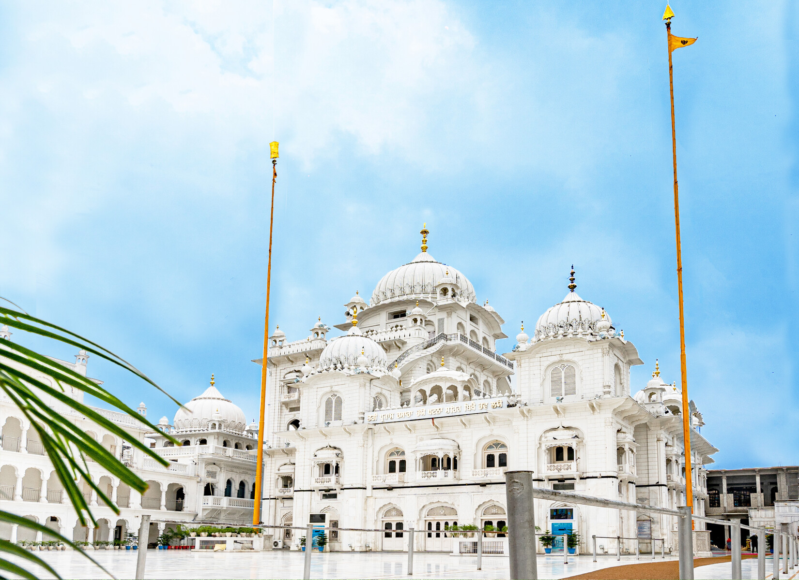

Sacred Sanctuaries
Discover the spiritual heart of Patna where diverse faiths converge.

Mahavir Mandir
One of the holiest Hanuman temples in North India, famous for its 'Naivedyam' sweets and miraculous aura...
Mahavir Mandir is one of the most prominent temples dedicated to Lord Hanuman. It is visited by millions of devotees every year. The temple is world-renowned for its 'Naivedyam' laddoos prepared by experts from Tirupati.
Highlights:
- Floating stones from Ram Setu preserved here
- Dual idols of Lord Hanuman (Sankat Mochan & Phaleron)
- Significant contribution to social service through cancer hospitals
Pro Tip: Visit during the early morning 'Aarti' for a soul-stirring experience.

Patan Devi Mandir
The deity after whom the city is named. It is one of the 51 Shakti Peethas of Goddess Sati...
Patan Devi is considered the presiding deity of Patna. The temple complex consists of 'Bari Patan Devi' and 'Chhoti Patan Devi'. It is a site of immense mythological importance.
History:
- Believed to be the place where the right thigh of Goddess Sati fell
- Ancient architecture with intricately carved stone idols
- Center of Tantric and Vedic worship for centuries

Takht Shri Patna Sahib
The birthplace of the 10th Sikh Guru, Guru Gobind Singh Ji, and one of the five Takhts of Sikhism...
Takht Sri Patna Sahib was built by Maharaja Ranjit Singh to commemorate the birthplace of Guru Gobind Singh Ji. It is a stunning example of white marble architecture and spiritual serenity.

ISKCON Patna
The 'Sri Sri Radha Banke Bihari Ji' Mandir is a magnificent Vedic cultural center in the heart of the city...

Jama Masjid
A symbol of Islamic heritage in Patna, featuring grand domes and minarets dating back centuries...

Panch Mukhi Hanuman
A unique shrine housing the powerful Panch-Mukhi (five-faced) form of Lord Hanuman, known for spiritual protection...